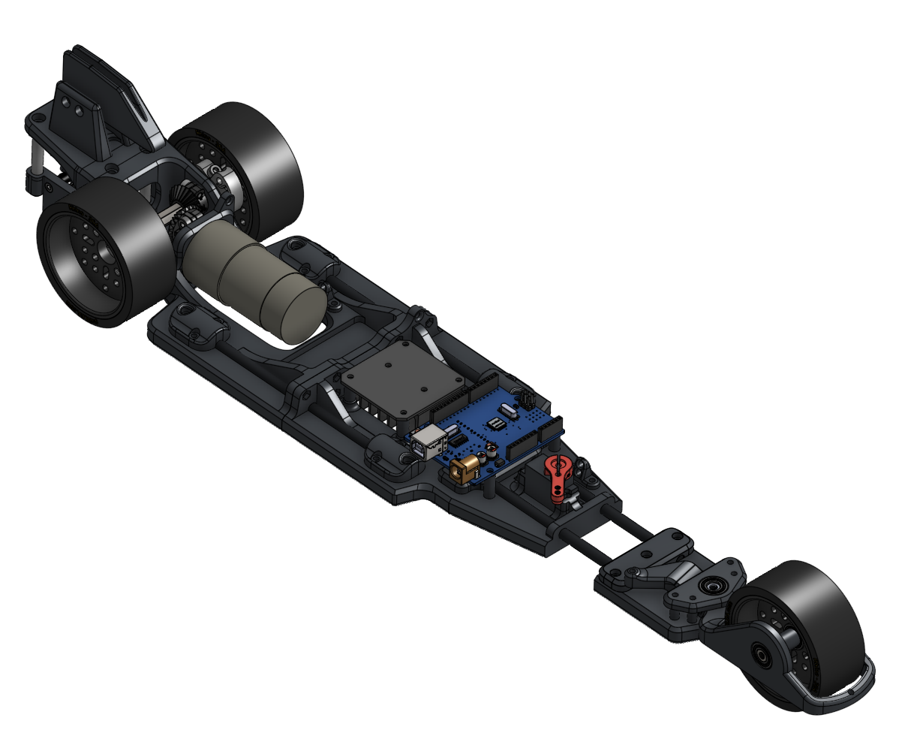
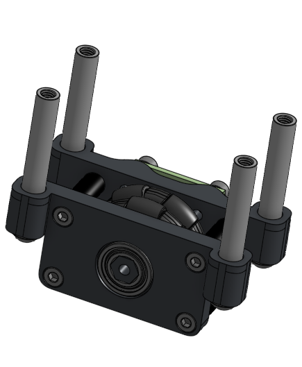

2026 · Science Olympiad
Electric Vehicle with sprung odometry pod
A competition vehicle using a spring-loaded measuring wheel and rotary magnetic encoder to maintain reliable distance readings.

Build overview
The odometry pod keeps contact with the floor as the vehicle crosses small surface changes. That mechanical compliance protects the measurement signal from becoming a function of the venue instead of the actual distance traveled.
This is where you can add the event constraints, target distances, electrical system, and the calibration process used before a run.
Gallery


Design notes
Components and architecture
Add the drive motors, encoder, measuring wheel, spring, chassis parts, battery, and control electronics used in the vehicle.
Design decisions
Explain why the pod needs compliance, how you selected the encoder and wheel geometry, and how the design protects repeatability over different surfaces.
Testing and next iteration
Add calibration data, repeatability results, surface tests, and the next adjustment you would make.